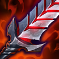
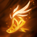
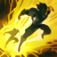

Tirador
/
Mago
Dificultad Moderada
HABILIDADES


PASIVA • MURMULLO
El cañón de mano de Jhin, Murmullo, es un instrumento preciso diseñado para infligir grandes cantidades de daño. Realiza disparos con un ritmo fijo y solo tiene 4 balas. Jhin imbuye la última bala con magia oscura para realizar un golpe crítico e infligir daño de ejecución adicional. Cuando asesta un golpe crítico con Murmullo, Jhin obtiene una breve mejora de velocidad de movimiento.
1 • GRANADA BAILARINA
Jhin lanza un explosivo mágico a un enemigo. Puede impactar hasta cuatro objetivos y obtiene daño con cada unidad que mata.
2 • BROTE MORTAL
Jhin dispara una sola bala con un enorme alcance. Atraviesa súbditos y monstruos, pero se detiene con el primer campeón al que impacta. El objetivo queda inmovilizado si fue alcanzado recientemente por ataques de aliados de Jhin, trampas de loto, o si recibió daño de Jhin.
3 • AUDIENCIA CAUTIVA
Jhin coloca una trampa de loto invisible que se activa cuando un enemigo la pisa. Ralentiza a los enemigos cercanos antes de infligirles daño con una explosión de pétalos serrados. Cuando Jhin mata a un campeón enemigo, aparecerá una Trampa de Loto cerca del lugar del asesinato.
DEFINITIVA • LLAMADO A ESCENA
Jhin canaliza, lo que transforma a Murmullo en un megacañón montado al hombro. Dispara 4 superproyectiles a una distancia extrema que atraviesan a los súbditos y monstruos, pero se detienen en el primer campeón impactado. Murmullo incapacita a los enemigos impactados, lo que los ralentiza y les inflige daño de ejecución. El cuarto disparo está perfectamente elaborado y es épicamente poderoso, lo que garantiza un golpe crítico.
CONFIGURACIÓN
OBJETOS
-

Filo del Infinito
3400+55 Daño de Ataque
+25% Tasa de Críticos
INFINIDAD: Los golpes críticos infligen un 230% de daño en vez de 200%.
-

Recordatorio Mortal
2800+45 Daño de Ataque
ÚLTIMO SUSPIRO: +30% de Penetración de Armadura.
SEPSIS: Infligir daño físico aplica un 40% de Heridas Graves a campeones enemigos por 3 seg. Si está por debajo del 50% de Vida, este efecto aumenta a un 60% de Heridas Graves.
Heridas Graves reduce la efectividad de las curaciones y efectos regenerativos. -

Cañón de Fuego Rápido
2800+25% Tasa de Críticos
+35% Velocidad de Ataque
RAPIDEZ DEL CAZADOR: +5% de Velocidad de Movimiento.
ENERGIZADOS: Moverse y atacar generará un Ataque Energizado.
FRANCOTIRADOR: Los Ataques Energizados se generan un 25% más rápido, obtienen de 50 a 120 de daño mágico adicional y 150 de alcance de ataque. Los ataques cuerpo a cuerpo solo obtienen 50 de alcance. -
Filo de la Tormenta
2900+25 Daño de Ataque
+25% Tasa de Críticos
+20% Velocidad de Ataque
ENERGIZADO: Moverse y atacar generará un Ataque Energizado.
PARALIZAR: Los Ataques Energizados obtienen de 50 a 120 de daño mágico adicional y ralentizan un 75% por 0.5 seg. -

La Sanguinaria
3300+50 Daño de Ataque
+25 Tasa de Críticos
SANGRIENTO: +15% de Vampirísmo Físico.
JURASANGRE: El Vampirísmo Físico te sobrecura y genera un escudo que absorbe de 40 a 320 de daño. Este escudo decae fuera de combate a lo largo de 10 seg. -
Botas de Rapidez
1000CALZADO: +50 de Velocidad de Movimiento.
LIGERO: Ralentizaciones de Velocidad de Movimiento reducidas un 30%.
CARRERA (ACTIVA): Aumenta la Velocidad de Movimiento un 15% durante 3 seg. Infligir o recibir daño de campeones desactiva los efectos de Carrera. (60 seg de enfriamiento). -

Encantamiento de Estasis
800ESTASIS (ACTIVA): Te vuelves invulnerable e inalcanzable durante 2.5 seg, pero no puedes moverte, atacar, lanzar habilidades ni utilizar objetos. (120 seg de enfriamiento).
RUNAS Y HECHIZOS
-

Sobre la Marcha
Al atacar, moverte y lanzar habilidades, juntas acumulaciones de Energía. Al llegar a 100 acumulaciones, tu siguiente ataque te curará y te otorgará velocidad de movimiento aumentada.
CURACIÓN: 15 - 85 (basado en nivel) + 30% adicional Daño de Ataque + 30% adicional Poder de Habilidad.
VELOCIDAD DE MOVIMIENTO ADICIONAL: 20% durante 1 seg.
En campeones a distancia, cura un 30% al atacar súbditos. -

Campeón
Obtienes un 8% de daño contra campeones. Pierdes un 4% cada vez que mueres hasta que el efecto desaparezca.
-

Cazador: Titán
Obtienes 20 de Vida Máxima. Los derribos de campeones únicos otorgan 20 de Vida Máxima Y 4% de Tenacidad.
-

Dulces Frutos
Aumenta la curación de Frutamiel en un 25%. Cada vez que tú o un aliado cercano coma una Frutamiel, obtienes 20 de oro.
-

Barrera
ENFRIAMIENTO: 120 seg.
Obtienes un escudo que absorbe 115 de daño (115-465) durante 2 seg. -

Destello
ENFRIAMIENTO: 150 seg.
Te teletransportas una distancia corta hacia delante o hacia la dirección objetivo.
CÓMO JUGAR JHIN
Jhin es un campeón del carril del dragón de daño de ataque. Jhin tiene un estilo de juego único en comparación con otros campeones tradicionales de la calle del dragón. Jhin tiene un cañón de mano que solo lleva 4 disparos. Después del cuarto disparo, tiene que recargar. Es muy importante realizar un seguimiento de esto cuando se juega a Jhin. Jhin es genial en todas las etapas del juego. Tiene un potencial de empuje en el juego temprano y un buen daño con su cuarto disparo y escala asombrosamente en el juego tardío cuando busca la construcción de golpe crítico completo.